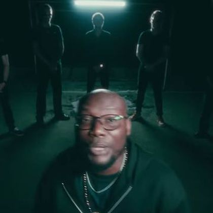
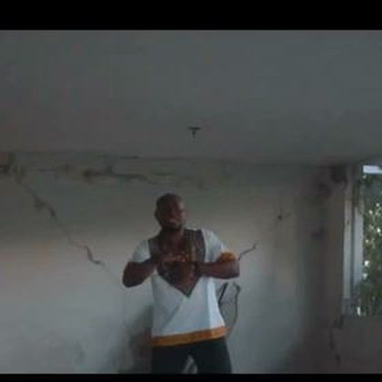
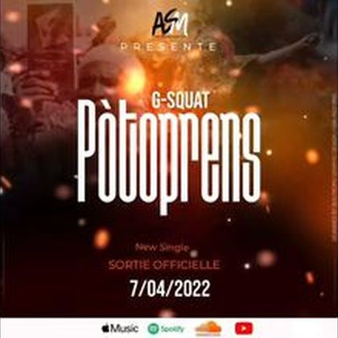
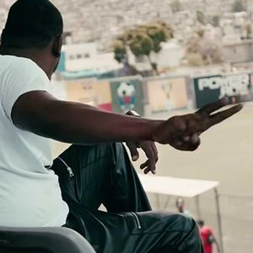

Le signal vient d’Haïti,
déchiffrez l’énigme.
DX-5 THE NIGMA
Rap-Ciné, l’écriture d’abord.
Rappeur, compositeur et arrangeur de texte, DX-5 The Nigma porte depuis Port-de-Paix une écriture qui n’a jamais quitté son pays natal.
Félix Debrosse est né à Port-de-Paix, dans le Nord-Ouest d’Haïti. La musique l’accompagne depuis l’enfance ; elle devient son métier en 2007, quand il fonde le groupe de rap G-Squat avec ses amis et écrit l’un des sept titres de son premier projet. En 2008, il quitte sa ville natale pour Port-au-Prince — des études universitaires d’un côté, un nouvel horizon dans la scène musicale haïtienne de l’autre. Aujourd’hui, DX-5 The Nigma est reconnu comme un artiste engagé pour la diversité culturelle et l’identité haïtienne, à travers un style qui lui est propre : le Rap-Ciné.

Le mot
L’écriture vient d’abord : des textes travaillés en créole et en français, construits comme des argumentaires. La psychologie et la gestion ont laissé leur empreinte — raisonnement, structure, adresse directe à l’auditeur.
Le tambour
Le rythme racine du vodou haïtien bat sous des productions contemporaines. C’est la colonne vertébrale de chaque titre, ce qui l’ancre.
L’identité
Chaque titre vise le même but : faire entendre la culture haïtienne et la rendre désirable, pour la jeunesse du pays comme pour la diaspora et les publics francophones.
DEPUIS 2007
Élise Aubert photographie des gens vrais, dans des lumières trouvées. Elle cherche l'instant précis où l'on cesse de poser — la seconde où le vrai visage revient.
TRAVAUX CHOISIS
Commandes & éditos
Mode, presse et campagnes, photographiées comme des séries personnelles.
HUIT PROJETS — 2019 → 2026
CE QUI GUIDE CHAQUE IMAGE
0
Pas de décor.
Pas de poses.
Pas de filtres.
Juste vous, en vrai.